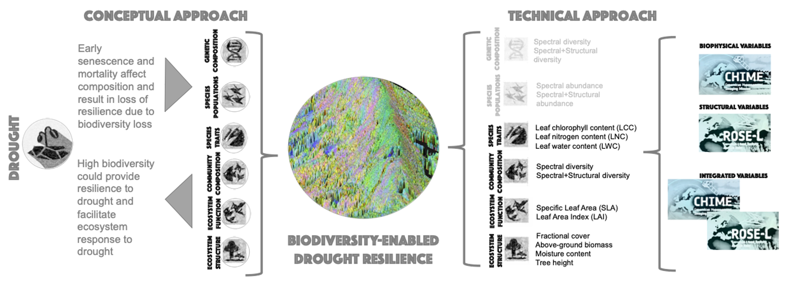

EO4Resilience
In this project we aim to (i) derive a set of EBVs using a combination of existing airborne and spaceborne hyperspectral optical and SAR data, representative of CHIME and ROSE-L upcoming missions, (ii) test the set of EBVs over a gradient of drought exposure represented by three test sites, (iii) develop and test two approaches to integrate multiple EBVs, namely (a) a data-driven approach and (b) a causal inference and discovery approach based on hypothesized relationships and on the discovery of potential new causal links, (iv) simulate and develop a novel integrative metric that captures the trade-offs between photosynthesis and water exchange that responds to the need to couple hydraulic and photosynthesis traits, and (v) use these approaches (single EBV analysis, multiple EBV analysis and novel integrated metric) to examine under which conditions there is biodiversity-enabled drought resilience.
Findings & Relevance
Together these results will not only advance our understanding of drought effects, but also enable us to test the use of EBVs towards process understanding, the development of seamless products that will make use of new data delivered by upcoming missions, and to deliver products aimed at the different actors from civil society to land managers, first as early adopters but later as general users, so that our understanding of the biodiversity-enabled ecosystem response and resilience to drought can translate to actionable knowledge across scales.